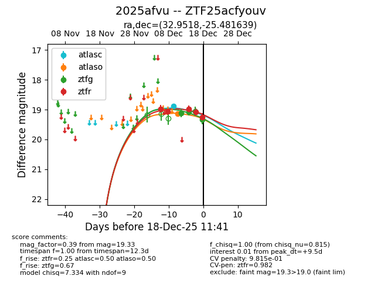
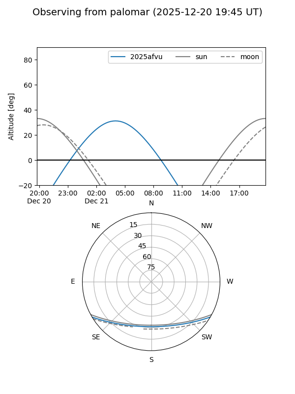
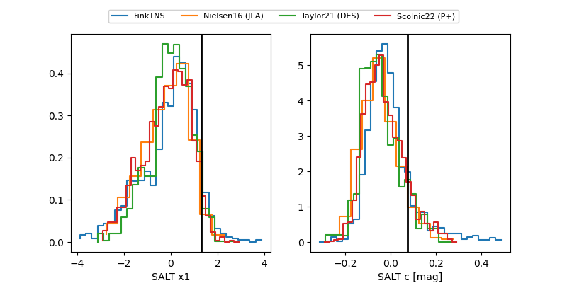

2025afvu
Target 2025afvu at 2025-12-21 05:13
Aliases and brokers:
FINK: fink-portal.org/ZTF25acfyouv
Lasair: lasair-ztf.lsst.ac.uk/objects/ZTF25acfyouv
ALeRCE: alerce.online/object/ZTF25acfyouv
TNS: wis-tns.org/object/2025afvu
YSE: ziggy.ucolick.org/yse/transient_detail/2025afvu
alt names
ZTF25acfyouv (ztf,fink_ztf)
2025afvu (tns,yse)
Coordinates:
equatorial (ra, dec) = 32.9518,-25.48164
equatorial (HMS+DMS) = 02:11:48.42,-25:28:53.90
galactic (l, b) = (212.2514,-71.93250)
Flags:
likely cv
Photometry:
last atlasc=18.88, atlaso=19.13, ztfg=19.33, ztfr=19.28
1 atlasc, 1 atlaso, 4 ztfg, 7 ztfr detections
Lightcurve

Visibility


Additional plots
